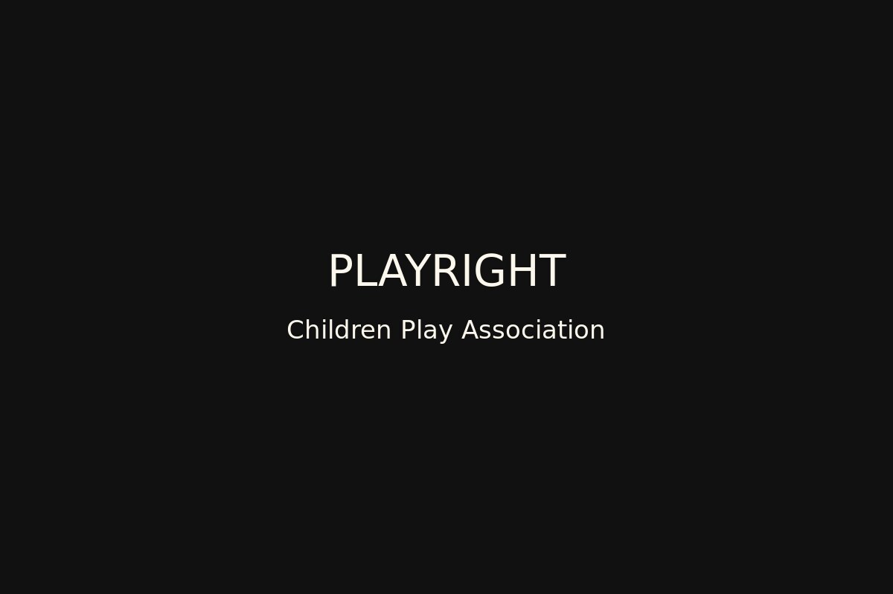

- Worked with UNICEF on the Free Play Rights advocacy project, promoting children's right to free play time and space in Hong Kong.
- 与联合国儿童基金会合作开展“自由游戏权”倡议项目，推动香港社会关注儿童成长中的自由游戏时间与空间权利。
- Led community play truck services for low-income families, including play scene design, on-site interaction and safety guidance.
- 带领团队定期为低收入家庭儿童提供社区游戏车服务，包括游戏场景设计、现场互动管理、儿童行为引导与安全培训。
- Prepared education brochures, activity reports and partnership proposals.
- 负责撰写教育宣传手册、活动报告与合作方案，推动倡议项目获得基金与慈善机构资助。
Mar 2012 - Mar 2015 / Hong Kong
2012年3月 - 2015年3月 / 中国 香港
Playright Children's Play Association
智乐儿童游乐协会
Children's Play Officer supporting community play services, education programmes and advocacy materials.
儿童游戏工作主任，负责社区游戏服务、教育项目与倡议内容。
Back to Work Experiences返回工作经历